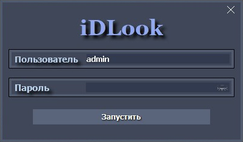

Программа iDLook
Программа iDLook
При первом запуске «iDLook» на экране появляется окно авторизации, в котором требуется ввести логин и пароль пользователя. Логин/пароль для первого входа: admin/admin В дальнейшем, их можно изменить на форме «Настройки».

Затем программа произведёт поиск устройств в составе локальной сети, по окончанию чего появится рабочий экран программы и иконка в трее, для вызова главного меню программы. Автоматический поиск устройств в сети производится только при первом старте или при отсутствии подключенных камер: в дальнейшем, при необходимости, можно использовать поиск камер из формы «Настройки».